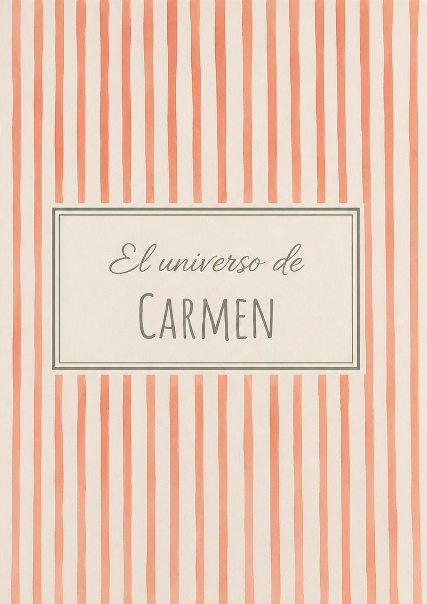

Cuando alguien a quien queremos ya no está, lo que más duele es pensar que los más pequeños no llegarán a conocerle. Convertimos su historia real en un cuento ilustrado en acuarela, con sus rasgos y sus recuerdos, para que los niños sepan cómo era, qué le hacía reír y cuánto les quería.
Crear su libro →
Un abuelo que contaba los mejores chistes, una abuela que cocinaba para todos, una madre, un padre o un tío que dejó huella. Escribimos su historia desde cero con los recuerdos de la familia: su infancia, su juventud, cómo formó su familia y lo que le hacía feliz.
Lo ilustramos en acuarela con sus rasgos reales a partir de una foto, en un tono tierno y luminoso, pensado para leerlo con los niños. Es un libro de recuerdos que ayuda a hablar de esa persona y a mantenerla cerca.
Y también puedes hacerlo para alguien que sigue con vosotros: mamá, papá, los abuelos, los tíos o tu propia historia.
Preguntas guiadas sobre su vida. Respondéis con notas de voz cuando queráis; se guarda solo.
Convertimos los recuerdos en un cuento en acuarela, con sus rasgos reales a partir de una foto.
Impreso en 21 × 28 cm, en tapa blanda o dura, en 2 o 3 semanas.
Con los recuerdos de quienes le quisieron. Respondéis a preguntas guiadas con notas de voz, a vuestro ritmo y cuando os sintáis con fuerzas. Podéis repartiros las respuestas entre varios familiares.
Ayuda mucho tener una foto de su cara para que se parezca. Si no hay, lo dibujamos a partir de cómo nos lo describáis.
Sí. El libro se centra en su vida, en lo que le hacía feliz y en lo que quería para los niños, con un tono tierno y luminoso, pensado para leerlo juntos.
45 € en tapa blanda y 63 € en tapa dura, con el envío incluido. Llega entre 2 y 3 semanas después de enviarnos la historia.